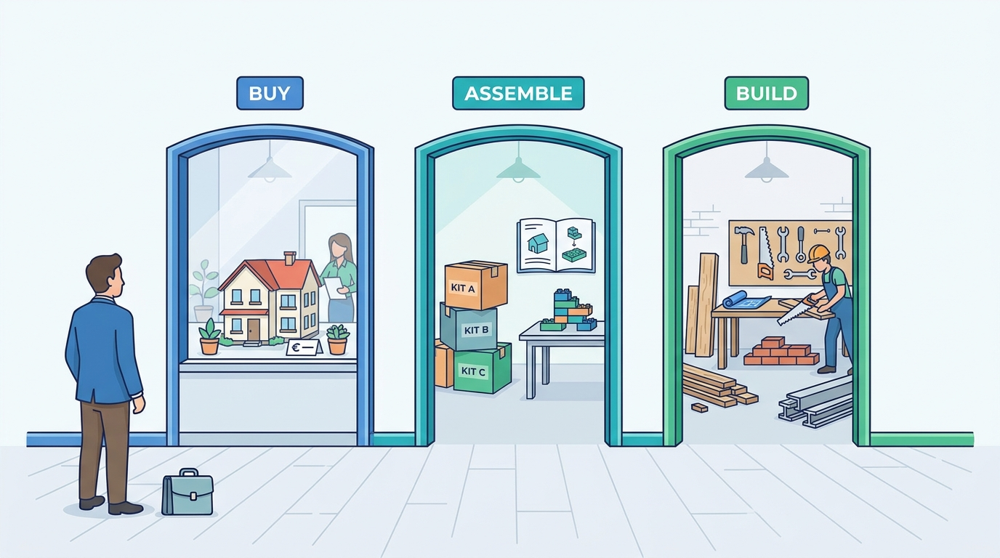

Part X — EVOLUTION: Decisions That Change With Scale
Build, Buy or Assemble: Choosing and Changing Platforms
AI-assisted: researched and written with Claude Code and Codex; illustrations generated with Gemini and OpenAI image tools. How this works
